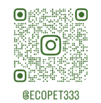

Feito para crescer aos poucos
O projeto começa de forma simples, com foco em um produto inicial e espaço para evoluir com consistência.
A Ecopet é um projeto independente que deseja crescer com propósito, sensibilidade estética e consciência ambiental.
Apoiar a Ecopet é fortalecer uma ideia que une cuidado com os gatos, identidade autoral e um olhar mais consciente para a produção.
A proposta é crescer com calma, autenticidade e compromisso com uma estética simples, acolhedora e sustentável.

Escaneie para acompanhar a Ecopet no Instagram.
A Ecopet não nasce como produção em massa. Ela nasce como uma marca indie, com construção gradual, atendimento próximo e possibilidade de expansão futura.
O projeto começa de forma simples, com foco em um produto inicial e espaço para evoluir com consistência.
A proposta da Ecopet valoriza uma relação mais cuidadosa com o que se produz, se apresenta e se consome.
Cada etapa do projeto busca transmitir delicadeza, aconchego e proximidade com o público.
Nosso catálogo inicial apresenta a caminha como primeiro passo da marca.